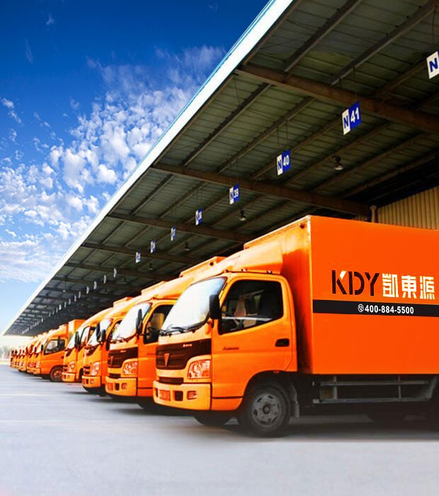
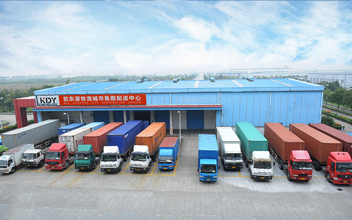
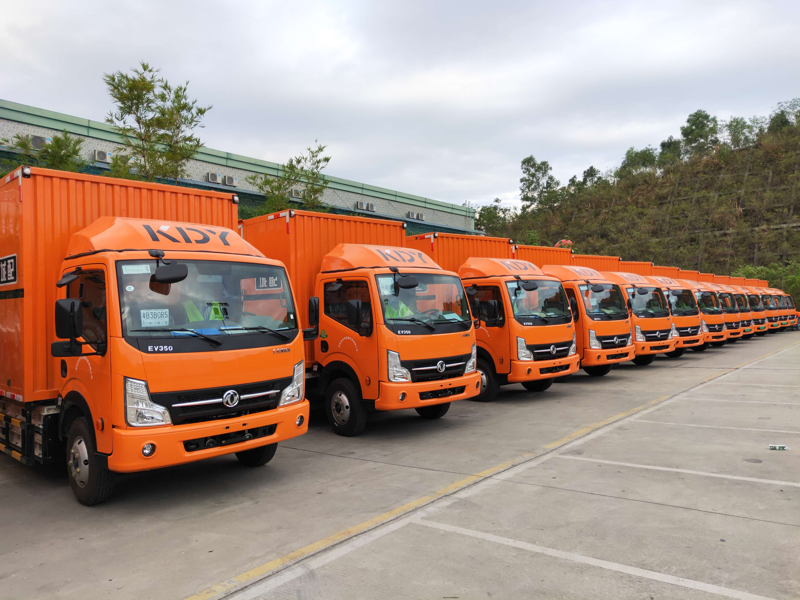

<!DOCTYPE html>
<html lang="en">
<head>
	<meta charset="UTF-8">
	<title>配送服务-凯东源城配官网-专业的快消品城市配送服务商</title>
	<meta name="keywords"  content="仓库租赁、仓库出租、商超配送、超市配送、门店配送、便利店配送、城市配送、快消品城配、仓配一体化、供应链优化、流通服务商" />

	<meta name="description" content="凯东源城配可以为企业级客户提供仓库租赁、仓库托管、同城物流配送、商超配送、连锁便利店配送，涵盖仓到仓、仓到店等多种配送形式，能为客户提供分拣、分装、贴标、一件代发等增值服务。另有“流通服务商”模式专为品牌商提供快消品供应链优化服务。" />
	<link rel="stylesheet" href="css/reset.css">
	<link rel="stylesheet" type="text/css" href="css/services.css">
	<link rel="stylesheet" href="iconfont/iconfont.css">
	<link rel="icon" href="images/LOGO.png">
	<script src='js/jquery-1.12.3.min.js'></script>
</head>
<body>
	<!-- 头部开始 -->
	<header>
		
	</header>
	<!-- 加载头部内容 -->
	<script src="head.js"></script>
	<!-- 头部结束 -->

	<!-- 主体内容开始 -->
	<div class="container">
	</div>
	<!-- 主体内容结束 -->

	<!-- 尾部开始 -->
	<footer>
		<div class="Foot_Bottom">
			<div id="NetworkSupervision">
				<script id="ebsgovicon" src="http://szcert.ebs.org.cn/govicon.js?id=a3f48d97-dcb7-48b3-92ed-755f3d9fbc58&width=75&height=105&type=1" type="text/javascript" charset="utf-8"></script>
			</div>
		</div>
	</footer>
	<!-- 尾部结束 -->

	<!-- 加载头部和尾部内容 -->
	<script src="load_common.js"></script>
	<script>

		addHtml("images/services/cangchu1.jpg","Product","Services","产品服务",'<li class="WarehousingService"><a href="WarehousingService.html">仓储服务</a></li><li class="DistributionService"><a href="DistributionService.html">配送服务</a></li><li class="WarehouseIntegration"><a href="./WarehouseIntegration.html">仓配一体</a></li><li class="Value-added_logistics_service"><a href="Value-added_logistics_service.html">增值服务</a></li><li class="CirculationService"><a href="CirculationService.html">流通服务</a></li><li class="VendingMachine"><a href="VendingMachine.html">自动售货机</a></li>',"配送服务","WAREHOUSING SERVICE",'<p>提供城际和城配专业运输服务，配送渠道包括总仓、商超和零售小店，以及电商加仓，提供运输增值服务，多点配送，装卸搬运，帮助客户设计规划运输线路，降低物流成本。</p><div class="Tab"><div class="tabHead"><div class="tabFirst"><div></div><span>城市配送</span></div><div><div></div><span>干线物流</span></div><div><div></div><span>新能源大车队</span></div><div><div></div><span>车队加盟</span></div></div><div class="tabContent"><div class="tab_content_first"><p>城市配送是物流链条中最后一公里的配送，在整个供应链环节内起着极为重要的起承作用，已被国家列入物流业振兴九大工程，提至优先重点发展的高度。</p><p>凯东源专注于快消品城市配送服务，为品牌商、渠道商和零售商提供计划性城配物流，包括仓到仓、仓到店等多种配送方式，覆盖KA、BC、电商、批发、餐饮、特通等渠道。</p></div><div><p>干线物流是指跨越省、区(市）的货物运输，目前凯东源自有加外协车辆2000余台，车型从13.5米、16米到18米，可以随时提供长途整车服务，运价合理、安全快速，服务范围覆盖华南、华东、华中、华北、西南区域，公司拥有辐射全国的配送网络，可满足业务区域全国化的客户配送需求。</p></div><div><p>凯东源物流积极响应政府号召，组建新能源大车队，完善配套设施建设，着力构建绿色物流体系，实现新能源物流车辆在城市配送领域更大规模应用。</p><p>拥有新能源大车队的凯东源，不再因道路限行而影响配送时效，此外，还降低了物流成本，改善了空气质量，还原蓝天白云，“做绿色物流，为生活加分”</p></div><div><h4>为打造全渠道物流服务网，公司承运车队诚邀项目合伙人。</h4><div><p>·自主运营</p><p>·独立核算</p><p>·利润分成</p><p>·品牌共享</p><p>·系统支持</p><p>·稳定货源</p><p>·资金支持</p></div><h4>加盟条件：</h4><div><p>·有意向从事物流行业，高中及以上文凭</p><p>·有创业梦想，热爱物流，熟悉物流运输</p><p>·有一定经济实力和团队管理经验</p><p>·在当地有运力和资源者优先合作</p></div></div></div></div>');

		$(".Tab>.tabHead>div").click(function(){
			$(this).attr('class','tabFirst').siblings().removeClass('tabFirst');
			$('.tabContent>div').eq($(this).index()).fadeIn(100).siblings().fadeOut(20);
		})
	</script>
	<script>
		var  _hmt  =  _hmt  ||  [];
		(function()  {
		    var  hm  =  document.createElement("script");
		    hm.src  =  "https://hm.baidu.com/hm.js?300f74f8e279b0f9f25bb5d51c900a3f";
		    var  s  =  document.getElementsByTagName("script")[0];  
		    s.parentNode.insertBefore(hm,  s);
		})();
	</script>
	
</body>
</html>